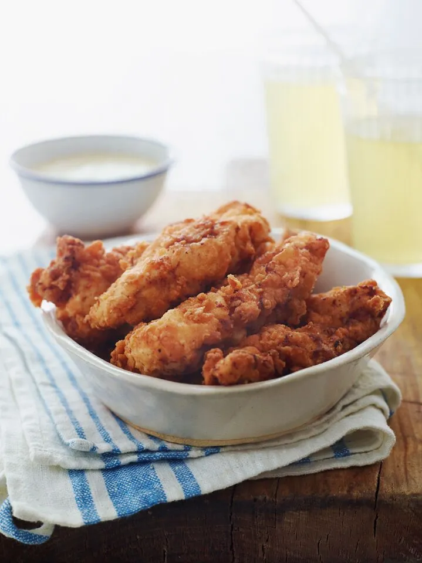

Buttermilk Fried Chicken Tenders Recipe
Click here for more recipes!

A little backstory
Like most kids, my daughter prefers “kid food” to “grown-up food” any day of the week. Occasionally, it works to my advantage—a trip to McDonalds makes excellent bribery—but most of the time Im just dealing with a picky eater. Rather than desperately trying to coax her into eating dinner every night, sometimes I just make her favorites.
These chicken tenders, marinated in seasoned buttermilk and pan-fried to crispy, crunchy perfection, are at the top of her list. Theyre delicious plain, dipped in honey mustard sauce, or perched on top of a salad. And theyre not just for picky kids—everyone loves them.
This recipe produces 4 servings
Ingredients
For the marinade
- 2 pounds chicken tenderloins
- 1 cup buttermilk
- 1.5 teaspoons of salt
- 1/4 teaspoon cayenne pepper
- 1/4 teaspoon garlic powder
- 1/4 teaspoon paprika
For the breading
- 1.5 cups of flour
- 1.5 teaspoons baking powder
- 1 heaping teaspoon of salt
- 3/4 teaspoon black pepper
- 3/4 teaspoon garlic powder
- 3/4 teaspoon paprika
- 3 tablespoons buttermilk
For cooking
- 3-4 cups of vegetable oil
Steps
- To marinate the chicken: In a large sealable bag, combine the chicken tenders with the remaining marinade ingredients. Seal the bag tightly and massage the chicken until it is evenly coated with buttermilk and seasoning. Place in a bowl (in case of leakage) and refrigerate for at least 4 hours or up to 24 hours.
- To make the breading: In a large bowl, combine the flour, baking powder, salt, pepper, garlic powder, and paprika. Whisk until well blended, then add the buttermilk and stir with a fork until the mixture is evenly clumpy.
- Line a baking sheet with aluminum foil for easy cleanup. Remove the chicken tenders from the marinade a few at a time and toss into the breading mixture. Be sure to press the chicken firmly into the breading so clumps adhere to the meat. (It's a messy job: use one hand to remove the wet tenders from the bag and the other to toss in the breading.) Set breaded tenders on the prepared baking sheet.
- To fry the chicken: Line another baking sheet with a few layers of paper towels and set next to the stove. Add oil to a large, high-sided pot until the level reaches about ¾-inch. Heat over medium-high heat until oil is shimmering (about 350°). (If a cube of bread sizzles when you drop it in, it's ready.) Using tongs, place several chicken tenders in the hot oil without crowding the pan. Cook until golden brown on the bottom side, a few minutes, then flip and cook until the second side is also golden, a few minutes more. Set the cooked tenders on the paper towel-lined baking sheet to drain. Fry remaining tenders in batches adjusting the heat as necessary (if the tenders are browning too fast, lower the heat). Serve hot.
Click here for more recipes!